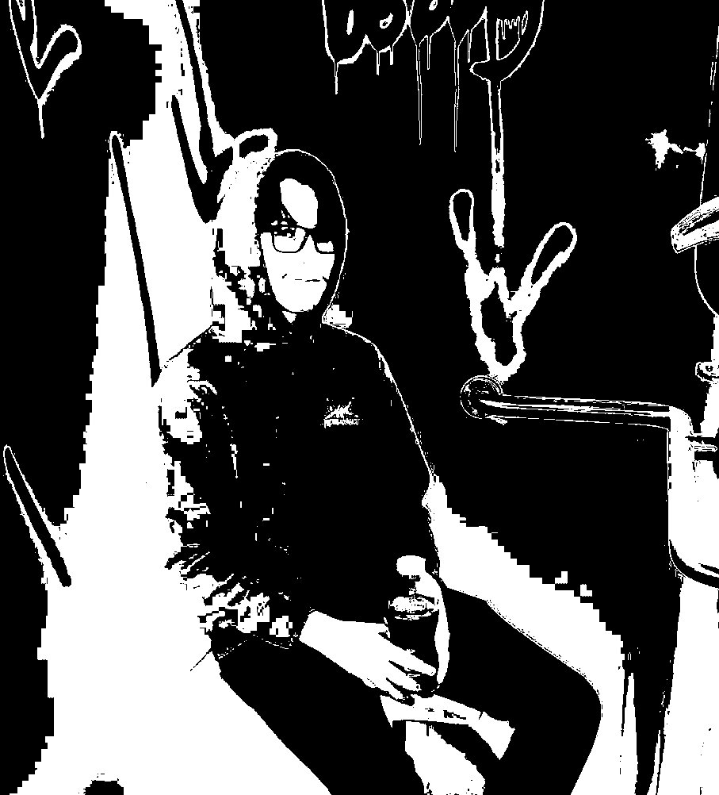

ABOUT
evilwizard.world is the domain of Nate Hammer and his creations. Nate Hammer is a multimedia artist exploring technology and digital entertainment. He is currently pursuing a degree in Digital Media, Arts, and Technology @ Penn State Behrend, with a planned graduation year of 2025. They specialize in a handful of different professions, such as: software programming, video editing, and graphic design. If you are interested in seeing the work Nate Hammer has done, you can check the projects he's worked on below.
I have worked on a variety of different projects since the
beginning of time. Some notable projects include:
